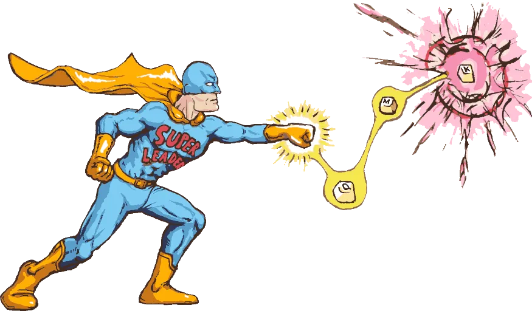
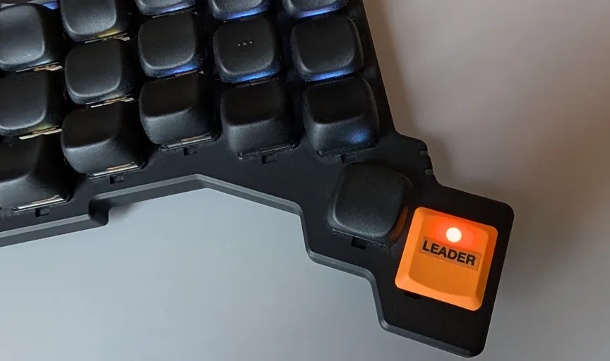
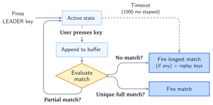
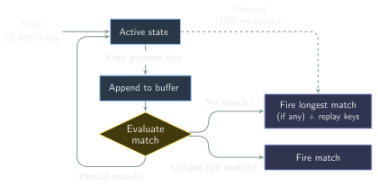

Super Leader
Pascal Getreuer, 2026-08-07 (updated 2026-08-11)

It’s not a bird or a plane—it’s a module for QMK keyboards!
Overview
With QMK’s Leader Key, you map sequences of keys to trigger custom actions. Conveniently, these sequences don’t use real estate in the layout, and they can be mnemonic to help with remembering them. However, unlike Vim’s leader key, QMK’s leader implementation always waits for a timeout before resolving, which feels sluggish, and the sequence definitions are cumbersome. I want a leader key in QMK, but snappy.
Super Leader is a responsive alternative. Response is instant when the sequence is not a prefix of any other sequence; the sequence triggers immediately on completion. Sequences being prefixes of others is still allowed (see how matching works for details). Definitions are concise, typically a single line per leader sequence.
Super Leader sequences can:
- output a keycode (
SEQ_KEY), - send a string (
SEQ_STR), - send a Unicode string (
SEQ_UNI), - call a user-defined function (
SEQ_FUN).
Example: The code snippet below implements the following leader sequences.
| Input | Result |
|---|---|
| LEADER, V | Ctrl+V (C(KC_V)). |
| LEADER, M, E | Types my@email.com. |
| LEADER, T, H, X | Types 🙏. |
| LEADER, R, G, B | Calls user-defined function favorite_rgb(). |
In super_leader.def
SEQ_KEY(v, (KC_V), C(KC_V))
SEQ_STR(me, (KC_M, KC_E), "my@email.com")
SEQ_UNI(thx, (KC_T, KC_H, KC_X), "🙏")
SEQ_FUN(rgb, (KC_R, KC_G, KC_B), favorite_rgb)In keymap.c
static void favorite_rgb(void*) {
rgb_matrix_enable();
rgb_matrix_mode(RGB_MATRIX_HUE_BREATHING);
rgb_matrix_sethsv(HSV_GOLDENROD);
}Add it to your keymap
Step 1: Module installation
Install my community
modules, then enable the getreuer/super_leader module
in your keymap.json:
{
"modules": ["getreuer/super_leader"]
}Additionally, enable the Combos feature or Repeat Key (or both) in
your rules.mk:
COMBOS_ENABLE = yes
REPEAT_KEY_ENABLE = yes(Either of these features enables the .keycode field in
keyrecord_t, which the implementation relies on.)
Step 2: Add a LEADER key

LEADER isn’t required, but you can if
you want to.
In your keymap.c file, assign keycode
LEADER somewhere in your layout. Pressing this key starts a
leader sequence.
Or instead of starting a leader sequence with a dedicated key, you
can produce LEADER from a combo or call
super_leader_start() from a tap dance or other custom
handler (see Programmatic API).
Comma leader: A practical way to fit
LEADER into a keymap is to assign it in the ,
comma key position. Then in the next step, include this in
super_leader.def:
// LEADER acts like KC_COMMA, unless there is a longer matching sequence.
SEQ_KEY(leader_default, (), KC_COMMA)We then use , followed by non-whitespace inputs for leader sequences. Since a comma is typically followed by space, this does not interfere much with regular comma typing.
Step 3: Define sequences in super_leader.def
In your keymap folder, create a file super_leader.def to
define your leader sequences:
SEQ_KEY(v, (KC_V), C(KC_V))
SEQ_KEY(dfu, (KC_D, KC_F, KC_U), QK_BOOT)
SEQ_STR(me, (KC_M, KC_E), "my@email.com")
// Uncomment this line for comma leader:
// SEQ_KEY(leader_default, (), KC_COMMA)Each “SEQ_*(name, (key1, key2, ...), output)” line
defines a leader sequence. The first arg is a unique name for the
sequence (any valid C identifier). The second arg
(key1, key2, ...) lists the sequence keys. The third arg
specifies the output.
If there are build errors, see Troubleshooting for help.
Notes:
super_leader.defcan refer to keycodes and other definitions made inkeymap.c. It is C code (dressed up in macros) that gets included at the bottom ofkeymap.c.The example above uses spaces to horizontally align the
SEQ_*arguments. I think this reads more clearly, but this is not required for the code to build.The sequence keys must be wrapped in parentheses, e.g.
(KC_V)or(KC_M, KC_E). (This part is mandatory, not style!)
Sequence outputs
Super Leader sequences can result in Keycode output, String output, Unicode output, or Calling a user-defined function, detailed in the following sections.
Keycode output
SEQ_KEY(name, (key1, key2, ...), keycode)Defines a sequence that outputs a keycode. Most output keycodes work here, even user-defined custom keycodes.
Key holding: Provided the sequence is not a prefix of any other sequence, the output key is held as long as the last key of the sequence is held. This opens some interesting possibilities, for instance using a leader sequence as a momentary layer switch:
SEQ_KEY(spc, (KC_SPC), MO(3))With the above: tapping LEADER and then pressing Space activates layer 3. The layer stays active until Space is released.
⚠ Warning
If using a TO or TG layer switch as an
output keycode, be sure the target layer includes a TO(0)
key or other means to turn it back off. Otherwise, the layer will be
stuck!
String output
SEQ_STR(name, (key1, key2, ...), "string")Defines a sequence that outputs a string via
SEND_STRING().
The X_* and SS_* codes are supported as
described in the QMK
Send String documentation. For instance, this sequence types
() and taps left arrow to place the cursor between the
():
SEQ_STR(p, (KC_P), "()" SS_TAP(X_LEFT))Unicode output
SEQ_UNI(name, (key1, key2, ...), "unicode")Defines a sequence that outputs a Unicode string via
send_unicode_string(). Note that SEQ_UNI
requires the QMK Unicode
feature. Minimally, set “UNICODE_COMMON = yes” in your
rules.mk and configure UNICODE_SELECTED_MODES
in config.h.
Calling a user-defined function
SEQ_FUN(name, (key1, key2, ...), fun)Defines a sequence that calls a custom callback function
fun(void* user_data).
Example: Input LEADER, R calls
print_random_number(), typing a pseudorandom number between
0 and 99:
In keymap.c
static void print_random_number(void*) {
send_string(get_u8_str(rand() % 100, ' '));
}In super_leader.def
SEQ_FUN(r, (KC_R), print_random_number)Passing user data: Optionally, you can pass a
void* pointer to any user data as an additional argument
after the function:
In keymap.c
static void html_tags(void* user_data) {
const char* tag = (const char*)user_data;
send_char('<'); send_string(tag); send_char('>'); // "<tag>".
SEND_STRING("</"); send_string(tag); send_char('>'); // "</tag>".
// Move cursor between the tags.
for (int8_t count = strlen(tag) + 3; count > 0; --count) {
tap_code(KC_LEFT);
}
}In super_leader.def
SEQ_FUN(hd, (KC_H, KC_D), html_tags, "div")
SEQ_FUN(ht, (KC_H, KC_T), html_tags, "table")
SEQ_FUN(hu, (KC_H, KC_U), html_tags, "ul")Tapping LEADER, H, T calls
html_tags("table"), producing
“<table></table>” and positioning the cursor
between the tags. The user_data arg parameterizes the tag
name, which we use for sequences producing div and
ul tags as well.
An aside on callbacks…
It is a common pattern in QMK (and C generally) that a callback
function will include a void* arg for user data. This is
because a void* is flexible enough to pass any
data into the callback.
For instance, suppose you wanted to pass both an integer and a
string. This can be done by creating a struct comprising
those fields, then pointing user_data at it:
In keymap.c
typedef struct { // Define struct type.
int16_t i;
char* str;
} foo_params_t;
static void foo(void* user_data) {
foo_params_t* params = (foo_params_t*)user_data;
int16_t i = params->i;
char* str = params->str;
// Use i and str...
}In super_leader.def
SEQ_FUN(f, (KC_F), foo, &(foo_params_t){.i = 42, .str = "hey"})Troubleshooting
Each SEQ_* line in super_leader.def defines
a leader sequence:
SEQ_*(name, (key1, key2, ...), output)Minor issues in this syntax can cause build errors. Here are some things to watch out for.
“
error: redefinition of 'sl_seq_somename'” means that more than one sequence uses somename in the first arg toSEQ_*. Make sure each sequence has a unique name.“
error: 'SUPER_LEADER_ARRAY1_'” indicates an error in the second arg toSEQ_*. The sequence keys must be wrapped in parentheses like(KC_V)or(KC_M, KC_E). Use()for an empty sequence where no keys follow the leader.“
error: invalid initializer” or “initialization of <X> from <Y>” is likely a type error with the sequence output (third arg).SEQ_*variantExpected output type SEQ_KEYuint16_t, a keycodeSEQ_STRconst char*, an ASCII stringSEQ_UNIconst char*, a UTF-8 stringSEQ_FUNFunction of signature void fun(void*)
How matching works
Super Leader eliminates latency by evaluating keystrokes in real time as they enter the buffer. If a sequence is not a prefix of any other, it triggers immediately. Or when a sequence is a partial match, the system loops back to wait for more input. If you press a non-matching key or the 1000 ms timer expires, Super Leader fires the longest valid match and automatically replays any remaining buffered keys.


For sake of example, consider these definitions:
SEQ_KEY(x, (KC_X), MS_BTN1)
SEQ_KEY(z, (KC_Z), C(KC_Z))
SEQ_UNI(zap, (KC_Z, KC_A, KC_P), "⚡")Super Leader’s sequence matching works as follows:
Immediate resolution: If you complete a sequence that isn’t a prefix of any other sequence, it fires instantly. With the above definitions:
- LEADER, X ⇒ presses the mouse button immediately.
- LEADER, Z (ambiguous, prefix of
ZAP) ⇒ waits for further input, resolves on timeout to result in Ctrl+Z.
Even when the sequence is a prefix of another, keys may be typed following the sequence before the timeout.
- LEADER, Z, A, S ⇒
results in the output Ctrl+
Z,A,S. It resolves once the S is pressed, since this does not matchZAP.
- LEADER, Z, A, S ⇒
results in the output Ctrl+
By default, mod-tap
MTand layer-tapLTkeys are reduced to their basic tap keycodes. E.g.LSFT_T(KC_F)matches asKC_F.Layer-switch keys are ignored. Sequences may span across multiple layers.
Tapping LEADER again resets the buffer and starts a new sequence.
By default, keys in a sequence must be typed within 1000 ms of each other, and sequences can be up to 5 keys long.
Configuration
Max sequence length
The default max sequence length is 5 keys (excluding the leader key).
Adjust in config.h:
#define SUPER_LEADER_MAX_LENGTH 6Timeouts
Set the max time allowed between sequence keys (default 1000 ms) in
config.h:
#define SUPER_LEADER_TIMEOUT 2000 Analogous to QMK’s LEADER_NO_TIMEOUT option, you can
disable timeout between tapping LEADER and tapping the first
key of the sequence with:
#define SUPER_LEADER_NO_INIT_TIMEOUTThe idea is that if your leader key is some outer key, far away from the sequence keys, you then have unlimited time to reposition your hand after tapping LEADER to enter the sequence.
Strict key processing
By default, only the tapping key portion of tap-hold keys added to
the sequence buffer, for instance, key LSFT_T(KC_F) matches
as KC_F. If you would rather match based on the full
keycode, define in config.h:
#define SUPER_LEADER_STRICT_KEY_PROCESSINGCallbacks
Optionally, define these callbacks in your keymap.c to
respond to leader state changes (e.g. to light an LED or update an OLED
screen):
void super_leader_start_user(void) {
// Leader sequence started.
}
void super_leader_end_user(bool successful_match) {
if (successful_match) {
// Leader sequence matched.
} else {
// Ended without a match.
}
}
void super_leader_add_user(
const uint16_t* seq, uint8_t num_seq, bool* partial) {
// Current sequence buffer: { seq[0], seq[1], ..., seq[num_seq - 1] }.
}Programmatic API
These functions are available for programmatic control:
| Function | Description |
|---|---|
super_leader_sequence_active() |
Whether a leader sequence is active. |
super_leader_start() |
Taps the LEADER key, beginning a sequence. |
super_leader_cancel() |
Cancels the active leader sequence, if any. |
super_leader_reset_timer() |
Resets the sequence timeout timer. |
super_leader_add(kc) |
Adds a keycode to the sequence buffer. |
Programmatic sequences
You can match sequences programmatically through the
super_leader_add_user() callback. This might be used for
instance to fit general patterns. Sequences implemented this way are
considered in addition to those in super_leader.def.
Example:
void super_leader_add_user(
const uint16_t* seq, uint8_t num_seq, bool* partial) {
// Sequence "R, E, P, <key>" => Taps <key> 10 times.
if (SUPER_LEADER_SEQ_STARTS_WITH((KC_R, KC_E, KC_P), partial) &&
num_seq == 4) {
static uint16_t key;
void rep_key(void*) {
for (uint8_t i = 0; i < 10; ++i) { tap_code16(key); }
}
key = seq[3];
super_leader_set_match(SUPER_LEADER_FUN(rep_key));
}
// "A, <key>, <same key>" where <key> is a letter => Taps AltGr+<key>.
if (SUPER_LEADER_SEQ_STARTS_WITH((KC_A), partial) &&
KC_A <= seq[1] && seq[1] <= KC_Z) {
if (num_seq < 3) {
*partial = true;
} else if (num_seq == 3 && seq[1] == seq[2]) {
uint16_t modded_keycode = ALGR(seq[1]);
super_leader_set_match(SUPER_LEADER_KEY(modded_keycode));
}
}
}Callback Expectations
The super_leader_add_user() callback is called every
time a key is added to the sequence buffer. The callback must fulfill
these expectations:
Partial matches: When the buffered keys match the beginning of a sequence that following keys might complete, set
*partial = true. This tells Super Leader to wait for further input or timeout instead of resolving immediately.Full matches: When the buffer matches a sequence, define its output by one of:
super_leader_set_match(SUPER_LEADER_KEY(kc)); super_leader_set_match(SUPER_LEADER_STR("string")); super_leader_set_match(SUPER_LEADER_UNI("unicode")); super_leader_set_match(SUPER_LEADER_FUN(fun, user_data));super_leader_set_match()defines what output the current sequence will have, unless/until overridden by later input matches a longer sequence.
In ambiguous cases, it is possible to partially match one sequence
and fully match another. The correct handling then is to set
*partial = true and call
super_leader_set_match().
Match logic is indeed nontrivial. The
SUPER_LEADER_SEQ_STARTS_WITH() helper can ease the
implementation for some types of patterns. It is strongly recommended to
use
super_leader.def for fixed sequences of keys.
Acknowledgements
Thanks to Reddit users u/Putrid-Climate9823, u/phbonachi, and u/DeepSpaceSignal and GitHub user @mwpardue for feedback and contributions to improve Super Leader.
Related reading
- Richard Goulter’s Using the QMK Leader Key for Fancy Keyboard Functionality
- Andrew Rae’s Userspace Leader Sequence implementation without timeouts
- ZMK: urob’s zmk-leader-key module (based on PR #1380)
- Kanata: the sequencer feature

 mikker/LeaderKey
leader-based launcher for macOS (video)
mikker/LeaderKey
leader-based launcher for macOS (video)